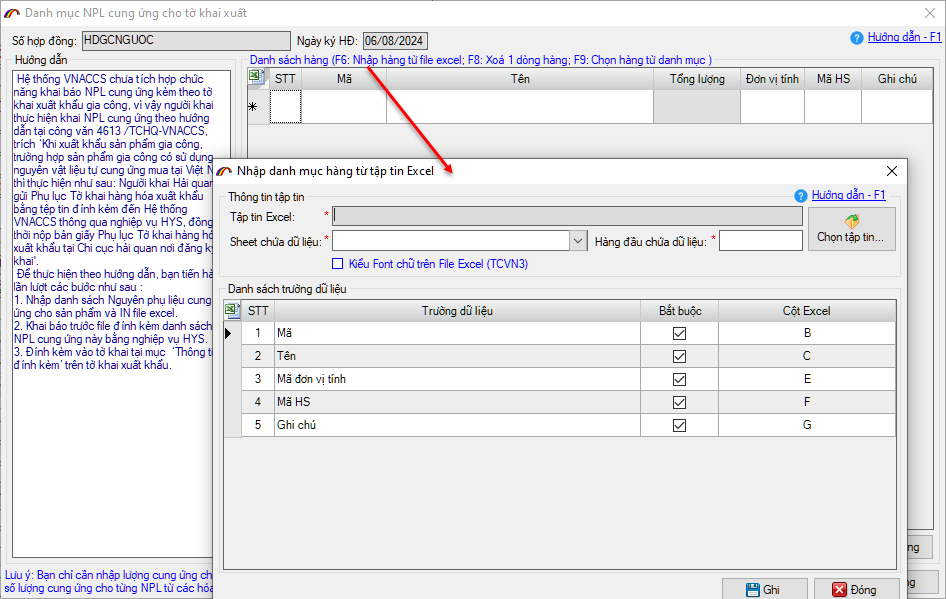
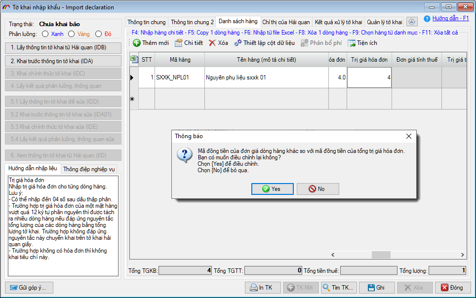
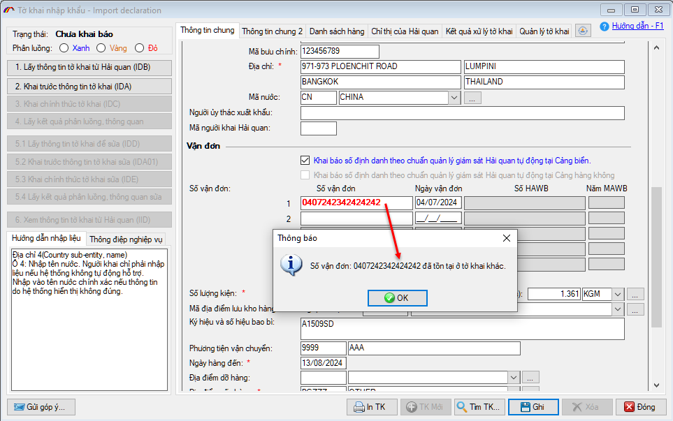
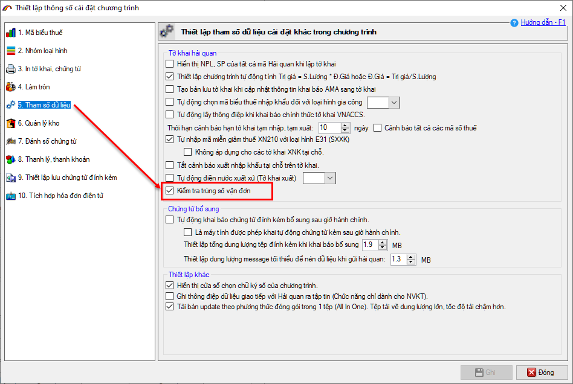
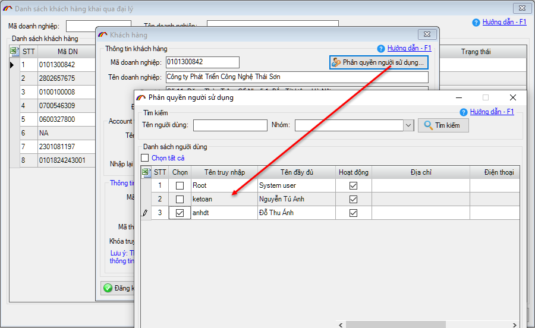
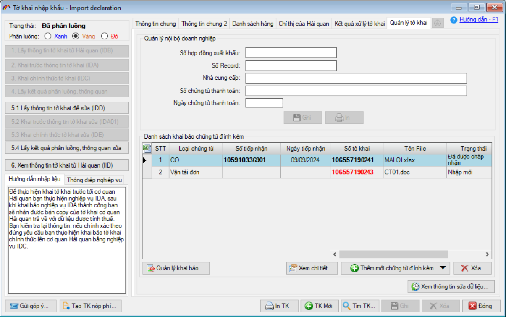

NHỮNG THAY ĐỔI TRÊN BẢN ECUS5VNACCS 2018
(Phiên bản update 12/09/2024)
Phần mềm ECUS5VNACCS2018 - Ngày phát hành 18/10/2024 | Version 6.0.156 | Lastupdate 12/09/2024 | Phiên bản CSDL 297
Phiên bản cập nhật ngày 12/09/2024 được phát hành ngày 18/10/2024 sửa đổi bổ sung một số chức năng, nhằm tăng hiệu suất phần mềm. Các chức năng được sửa đổi, bổ sung cụ thể như phần chi tiết dưới đây:
- 1. Bổ sung chức năng nhập từ excel cho danh sách NPL Cung ứng để in.
Phần mềm bổ sung thêm chức năng import dữ liệu từ file excel cho form nhập danh sách NPL cung ứng để in trên tờ khai xuất Gia công, giúp doanh nghiệp đưa vào danh sách một cách nhanh chóng.

- 2. Cảnh báo khi nhập mã tiền tệ trong dòng hàng khác với mã tiền tệ trong tổng trị giá hóa đơn.
Khi người dùng nhập vào mã tiền tệ trong dòng hàng khác với mã đồng tiền của tổng trị giá hóa đơn, phần mềm sẽ hiển thị thông báo cảnh báo để người dùng kiểm tra lại, tránh được sai sót không đáng có khi khai báo.

- 3. Cảnh báo tờ khai trùng số vận đơn.
Phần mềm bổ sung chức năng cảnh báo nếu khai trùng số vận đơn, cảnh báo sẽ hiện khi ghi tờ khai. Chức năng nhằm mục đích tránh việc hủy tờ khai do khai trùng lô hàng.

Để sử dụng chức năng cảnh báo này, doanh nghiệp thiết lập tại menu Hệ thống / Thiết lập thông số chương trình / Tham số dữ liệu:

- 4. Gán quyền quản lý khách hàng cho người sử dụng.
Khi thêm mới khách hàng (tại menu Danh sách khách hàng với đại lý), phần mềm cho phép gán khách hàng đang thêm mới cho người dùng cụ thể.

- 5. Hiển thị danh sách chứng từ đính kèm của tờ khai trên các bản sửa.
Khi tờ khai có các bản sửa (đuôi 1,2,3...) phần mềm sẽ hiển thị đầy đủ danh sách chứng từ đính kèm để người dùng tiện xem luôn mà không cần phải di chuyển qua lại giữa các bản khai. Trên danh sách chứng từ, phần mềm bổ sung cột Số tờ khai để bạn dễ dàng nhận biết chứng từ đính kèm đó được khải ở bản khai báo nào của tờ khai.

- 6. Cùng nhiều chức năng, tiện ích khác nhằm nâng cao hiệu suất chương trình...
Bản quyền © thuộc về Công ty TNHH Phát triển công nghệ Thái Sơn